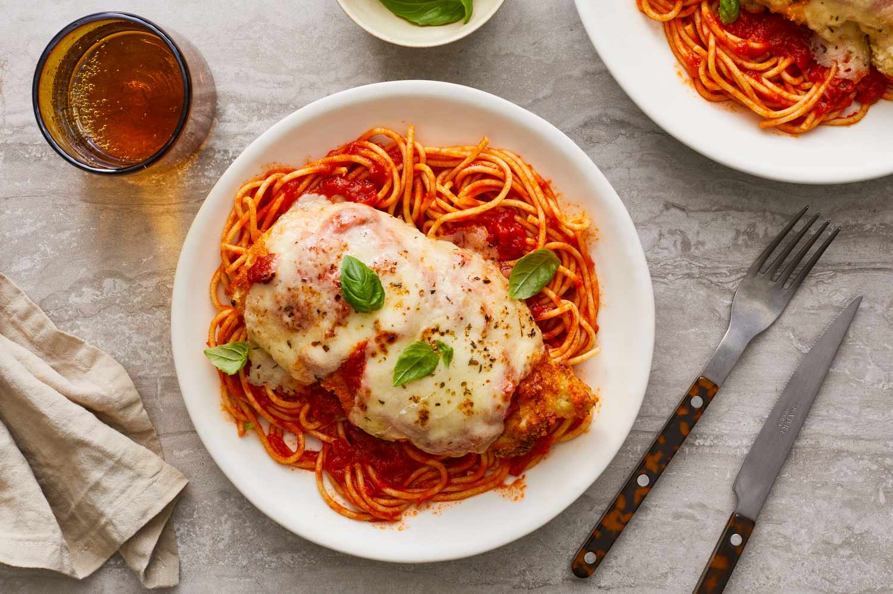

Chicken Parmesan

Description
Chicken Parmesan, also known as Chicken Parmigiana, is a delicious combination of crispy breaded chicken, marinara sauce, and melted cheese. Perfectly paired with pasta or bread.
Ingredients
- 4 boneless, skinless chicken breasts
- 1 cup of breadcrumbs
- 1/2 cup of grated parmesan cheese
- 1 cup of marinara sauce
- 1/2 cup of mozzarella cheese, shredded
- 1/4 cup of fresh basil leaves
- 2 eggs
- Salt and pepper to taste
- Oil for frying
Steps
- Preheat your oven to 425°F (220°C).
- In a bowl, whisk the eggs. In a separate dish, mix breadcrumbs with parmesan, salt, and pepper.
- Dip each chicken breast in the eggs, then coat with the breadcrumb mixture.
- Heat oil in a skillet and fry each chicken piece until golden brown on both sides. Remove and set aside.
- Place chicken pieces in a baking dish. Top each with marinara sauce, mozzarella, and basil.
- Bake in the preheated oven for 15-20 minutes or until chicken is cooked through and cheese is melted.
- Serve hot, ideally with spaghetti or your favorite pasta.